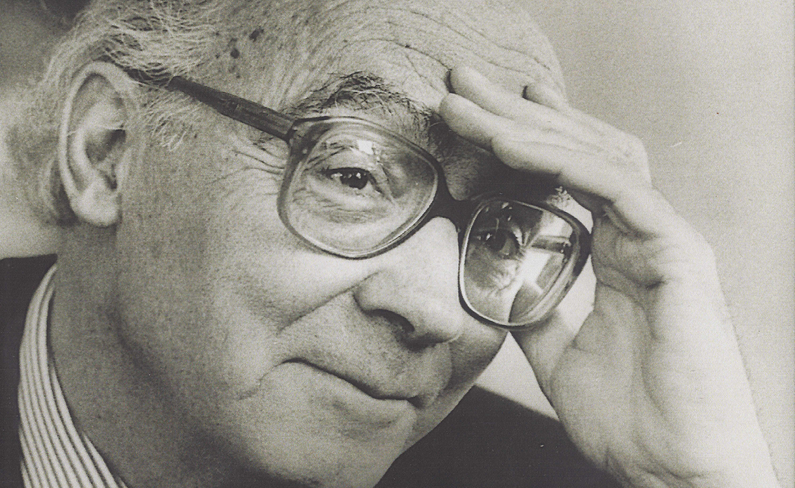

Autor de mais de 40 títulos, José Saramago nasceu em 1922, na aldeia de Azinhaga.
As noites passadas na biblioteca pública do Palácio Galveias, em Lisboa, foram fundamentais para a sua formação. «E foi aí, sem ajudas nem conselhos, apenas guiado pela curiosidade e pela vontade de aprender, que o meu gosto pela leitura se desenvolveu e apurou.»
Em 1947 publicou o seu primeiro livro que intitulou A Viúva, mas que, por razões editoriais, viria a sair com o título de Terra do Pecado. Seis anos depois, em 1953, terminaria o romance Claraboia, publicado apenas após a sua morte.
No final dos anos 50 tornou-se responsável pela produção na Editorial Estúdios Cor, função que conjugaria com a de tradutor, a partir de 1955, e de crítico literário.
Regressa à escrita em 1966 com Os Poemas Possíveis.
Em 1971 assumiu funções de editorialista no Diário de Lisboa e em abril de 1975 é nomeado director-adjunto do Diário de Notícias.
No princípio de 1976 instala-se no Lavre para documentar o seu projecto de escrever sobre os camponeses sem terra. Assim nasceu o romance Levantado do Chão e o modo de narrar que caracteriza a sua ficção novelesca.
José Saramago recebeu o Prémio Camões em 1995 e o Prémio Nobel de Literatura em 1998.
Os livros de José Saramago estão publicados nos seguintes países:
Albânia, Alemanha, Angola, Argentina, Áustria, Azerbeijão, Bangladesh, Bósnia-Herzegovina, Brasil, Bulgária, Canadá, China, Colômbia, Coreia do Sul, Croácia, Cuba, Dinamarca, Egito, Emiratos Árabes Unidos, Eslováquia, Eslovénia, Espanha, Estados Unidos da América, Estónia, Finlândia, França, Geórgia, Grécia, Guatemala, Holanda, Hungria, Índia, Irão, Iraque, Islândia, Israel, Itália, Japão, Letónia, Lituânia, Macau, Macedónia, México, Moçambique, Montenegro, Noruega, Peru, Polónia, Portugal, Reino Unido, República Checa, República Dominicana, Roménia, Rússia, Sérvia, Síria, Suécia, Suíça, Tailândia, Taiwan, Turquia, Ucrânia, Uruguai e Vietname.
Os livros de José Saramago estão traduzidos nos seguintes idiomas:
Albanês, alemão, árabe, azerbaijano, bengali, búlgaro, cantonês, castelhano, catalão, checo, coreano, croata (alfabeto latino), dinamarquês, eslovaco, esloveno, esperanto, euskera, farsi, finlandês (suomi), francês, georgiano, grego, hebraico, hindi, holandês, húngaro, inglês, islandês, italiano, japonês, letão, lituano, malabar, malaio, mandarim, norueguês, polaco, romeno, russo, sardo, sérvio (alfabeto cirílico), sueco, tailandês, tamil, turco, ucraniano, valenciano e vietnamita.